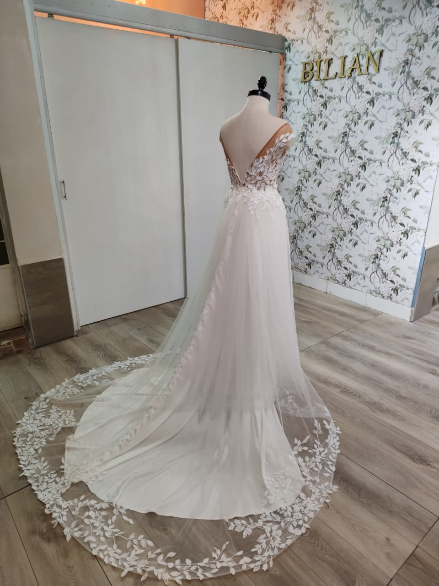
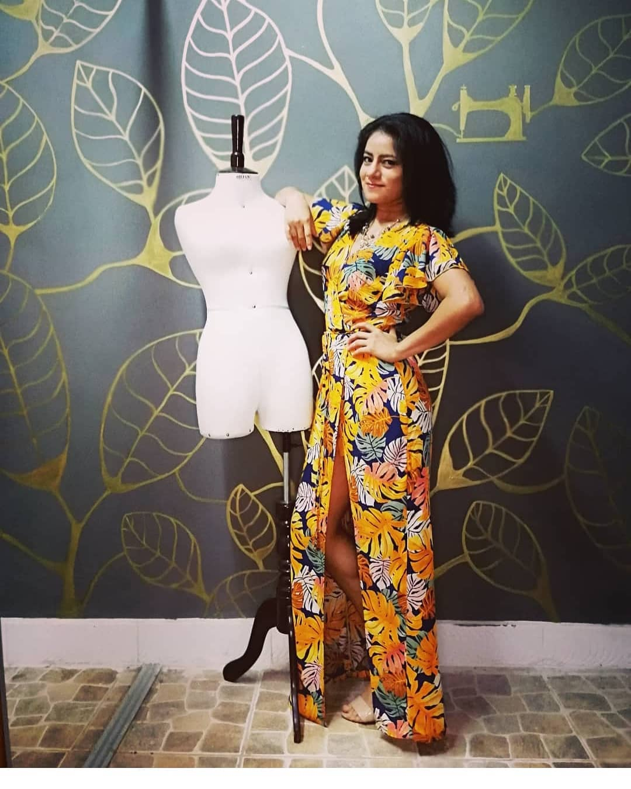
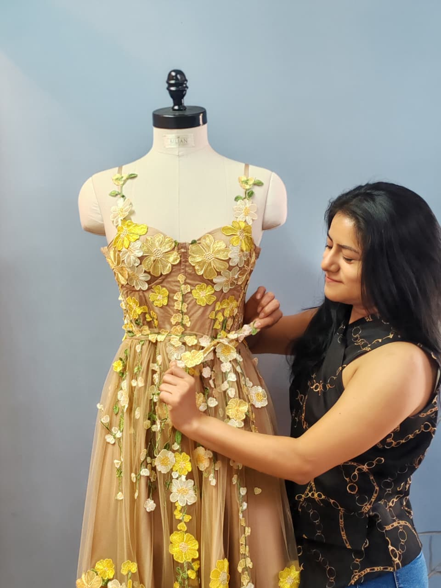
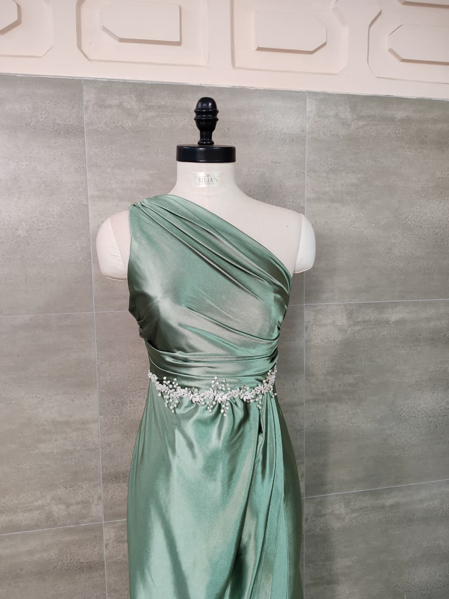

Novias
La línea más íntima. Vestidos de ceremonia en seda y encaje, diseñados a partir de tu historia. Desde 3 pruebas de ajuste hasta el día de tu boda.
Ver colección de noviasModa lenta · Diseño de autor
Diseños de autor en tejidos nobles y paleta de atardecer. Cada prenda se corta, cose y termina a mano en el taller de Lily Palacios. Sin moldes de serie, sin prisa, sin iguales.
La diseñadora
Soy Lily Palacios, diseñadora de moda y creadora de BILIAN.
Cuando decidí estudiar Diseño de Moda, mi idea inicial era sencilla: quería aprender para poder dirigir un taller. Pero el camino me llevó mucho más lejos. Descubrí que la moda no era solamente una profesión; era el lugar donde podía expresar mi creatividad, mi sensibilidad y mi manera de entender la belleza.
Me enamoré de este oficio cuando comprendí que tenía el arte en mis manos y la imaginación para convertirlo en realidad.
Así nace BILIAN: desde el corazón, desde la pasión por crear y desde una visión sofisticada de la moda, donde cada diseño busca resaltar la elegancia, la feminidad y la esencia de cada mujer.
En BILIAN creemos que un vestido no debe simplemente adaptarse a un cuerpo. Debe adaptarse a la mujer que lo lleva.
Por eso diseñamos para el cuerpo real, no para un maniquí. Escuchamos a cada mujer, conocemos su silueta, sus gustos, su personalidad y aquello que quiere transmitir. Porque diseñamos para mujeres que ya saben quiénes son y que desean que su vestido sea una extensión de ellas mismas.
Cada pieza es concebida de manera personalizada. Seleccionamos cuidadosamente las telas, texturas, bordados y detalles de acuerdo con cada diseño y con la historia que queremos contar a través de él.
Detrás de cada vestido existe tiempo, paciencia y dedicación. Una pieza puede requerir entre 6 y 12 horas de trabajo manual por jornada, y un vestido especial y personalizado, como un vestido de novia, puede tomar entre uno y dos meses de elaboración, cuidando minuciosamente cada acabado.
No creemos en la producción en serie cuando se trata de momentos que son únicos. Creemos en las piezas que llevan una parte de quien las crea y, sobre todo, una parte de quien las viste.
BILIAN es mi forma de transformar telas en emociones, ideas en siluetas y sueños en vestidos.
Porque cuando una mujer se siente verdaderamente ella misma, su manera de caminar cambia, su presencia se transforma y su historia comienza a sentirse diferente. Porque un buen vestido te lleva a un buen lugar.
BILIAN — Lily Palacios
Diseño, confección y alta costura hecha para ti.

El taller
La diseñadoraTres formas de vestirte

La línea más íntima. Vestidos de ceremonia en seda y encaje, diseñados a partir de tu historia. Desde 3 pruebas de ajuste hasta el día de tu boda.
Ver colección de novias
La pieza que roba miradas. Diseños de cóctel y noche, a medida o semi-custom, en una sola sesión de diseño y una prueba final.
Ver colección de cóctelLo esencial, hecho eterno. Prendas prêt-à-porter en ediciones limitadas, de número bajo y confección artesanal. Cuando se agotan, se agotan.
Ver la última ediciónTestimonios
«Mi vestido de novia no fue una prenda: fue el recuerdo más bonito del día más importante. Lily capturó algo que yo no sabía nombrar.»— Mariana G., Novia, vestido «Nube», Ciudad de México
Cuéntanos qué soñaste: vestido de novia, cóctel o tu nueva pieza favorita. Agenda una cita de diseño personalizado y conversemos sobre tu idea.
Respuesta rápida por WhatsApp, de lunes a sábado de 10 a 18 h.
Escríbenos por WhatsApp